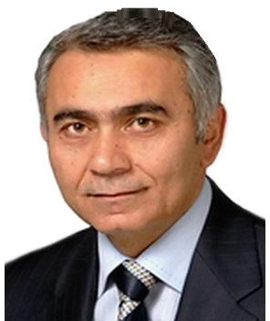

Profil
İlham Axundov 2013-cü ildən Vaterloo Universitetinin Riyaziyyat fakültəsində riyaziyyat, biznes və mühasibat bakalavr proqramlarının direktorudur. 1988-ci ildə Sankt-Peterburq Universitetində ehtimal nəzəriyyəsi və riyazi statistika ixtisası ilə riyaziyyat üzrə PhD, 1981-ci ildə orada riyaziyyat üzrə bakalavr dərəcəsi alıb. 2009–2013-cü illərdə Vaterloo Universitetinin Birləşmiş Ərəb Əmirliklərindəki kampusunda akademik işlər üzrə direktor müavini, 2007–2009-cu illərdə Vaterlooda müəllim, 2000–2007-ci illərdə Makmaster Universitetində köməkçi professor olub. Əvvəl Odlar Yurdu Universitetində və Azərbaycan Dövlət İqtisad Universitetində dosent olub.
İş təcrübəsi
Vaterloo Universiteti, Kanada
2013–hazırdaRiyaziyyat, biznes və mühasibat bakalavr proqramlarının direktoru
- Riyaziyyat fakültəsi. Bölmədə 3.000-dən çox bakalavr tələbəsi var
Vaterloo Universitetinin kampusu, Birləşmiş Ərəb Əmirlikləri
2009–2013Akademik işlər üzrə direktor müavini
Vaterloo Universiteti, Kanada
2007–2009Müəllim
- Statistika və aktuar elm departamenti
Makmaster Universiteti, Kanada
2000–2007Köməkçi professor
- Riyaziyyat və statistika departamenti
Texas A&M Universiteti, Amerika Birləşmiş Ştatları
1999–2000Fulbright elmi professoru
Odlar Yurdu Universiteti, Bakı, Azərbaycan
1995–1999Dosent
- Riyaziyyat və ekonometrika departamenti. Həmçinin beynəlxalq işlər üzrə prorektor
Kəmiyyət iqtisadiyyatı departamenti, Amsterdam Universiteti, Niderland
1997Tədqiqat səfəri
Azərbaycan Dövlət İqtisad Universiteti, Bakı, Azərbaycan
1988–1995Baş müəllim, köməkçi professor və dosent
Sankt-Peterburq Universiteti, Rusiya
1984–1988Doktorant
Sankt-Peterburq Universiteti, Rusiya
1982–1984Elmi köməkçi
Azərbaycan SSR Elmlər Akademiyasının Riyaziyyat İnstitutu
1981–1982Ştatlı elmi işçi
Təhsil
PhD
1988Riyaziyyat, ehtimal nəzəriyyəsi və riyazi statistika. Dissertasiya: Asymptotic behavior of ordered random variables and their sums. 139 səhifə
Sankt-Peterburq Universiteti, Rusiya
BSc
1981Riyaziyyat. BSc
Sankt-Peterburq (Leninqrad) Universiteti, Rusiya
Qrantlar və layihələr
- 1995–1997 — TACIS MBA proqramı qrantı, müəllim kimi
- 1998 — Dünya Bankı və BVF qrantı, Daşkənd
- 1999 — Gənc müəllim nailiyyəti qrantı
- 1999–2000 — Fulbright qrantı
- 2003–2007 — NSERC qrantı
- 2006 — CIDA qrantı
- 2007 — AUCC qrantı
- 2007 — Kanada Fondu qrantı
Tədris
- 2007–hazırda — Riyazi analiz, xətti cəbr və statistika, o cümlədən MATH 116, 137, 136, 115, 118, STAT 231, 241, 202 və ME 202 — Vaterloo Universiteti
- 2002–2007 — Riyazi statistika, tətbiqi xətti modellər, riyazi analiz, diferensial tənliklər və ehtimal — Makmaster Universiteti
- 1997–1999 — Bioloqlar üçün statistik üsullar — Odlar Yurdu Universiteti, Bakı
- 1995–1996 — Riyaziyyatçılar və mühəndislər üçün ehtimal nəzəriyyəsi — Xəzər Universiteti, Azərbaycan
- 1988–1995 — Bakalavr iqtisadçıları üçün ehtimal və statistik üsullar və magistratura statistikası — Azərbaycan Dövlət İqtisad Universiteti, Bakı
Elmi rəhbərlik
- PhD rəhbərlik komitəsi — 1 — Dong-Hoon Han, 2006–2007
- PhD opponenti — 1 — Tao Li, 2005
- Magistr opponenti — 4 — Qihao Xie (2004); C. Frisina (2004); M. Rettinganti (2005); D. Han (2006)
- Bakalavr elmi simpoziumu — 1 — Joshuah Touyz, 2009
Nəşrlər
Kitablar və dərsliklər
1. Akhundov, I. (1991). Probability Theory. Textbook for business students, in Azerbaijani. Baku. 120 pages.
2. Akhundov, I. (1992). Mathematical Statistics. Textbook for business students, in Azerbaijani. Baku. 80 pages.
3. Akhundov, I., & Valiyev, A. (1998). Theory of Probability and Mathematical Statistics. Textbook for business students, in Azerbaijani. Baku. 230 pages.
Kitab fəsilləri
1. Akhundov, I., & Nevzorov, V. (2008). Characterizations of distributions via bivariate regression on differences of records. In: Records and Branching Processes. Nova Science Publishers, pp. 27–35.
2. Akhundov, I. (1985). Limit theorems, taken into account the role of maximum terms in the addition of independent random variables. In: Rings and Modules. Limit theorems of the Theory of Probability, vol. 1, pp. 139–146. St. Petersburg.
Rəylənmiş (peer-reviewed) jurnal məqalələri
1. Akhundov, I., & Nevzorov, V. (2012). From Student's t2 distribution to Student's t3 distribution through characterizations. Communications in Statistics - Simulation and Computation, 41(6), 710–716.
2. Akhundov, I., & Nevzorov, V. (2010). A simple characterization of Student's t3 distribution. Statistics & Probability Letters, 80(5–6), 293–295.
3. Akhundov, I., & Nevzorov, V. (2009). On characterizations of t2 distribution by regressional properties of maximums. Metron, LXVII(1), 51–56.
4. Akhundov, I., & Nevzorov, V. (2008). On an extension of a family of distributions introduced by Wesolowski and Ahsanullah. Journal of Statistical Theory and Applications, 7(4), 379–385.
5. Nevzorova, L., Nevzorov, V., & Akhundov, I. (2007). A simple characterization of Student's t2 distribution. Metron, LXV(1), 53–57.
6. Akhundov, I., Berred, A., & Nevzorov, V. (2007). On the influence of record terms in the addition of independent random variables. Communications in Statistics: Theory and Methods, 36(7), 1291–1303.
7. Akhundov, I., & Nevzorov, V. (2007). Conditional distributions of record values and characterizations of distributions. Journal of Mathematical Science, 145(2), 4837–4842.
8. Akhundov, I., Balakrishnan, N., & Nevzorov, V. (2004). New characterizations by properties of midrange and related statistics. Communications in Statistics: Theory and Methods, 33(12), 3133–3143.
9. Balakrishnan, N., & Akhundov, I. (2003). A characterization by linearity of the regression function based on order statistics. Statistics and Probability Letters, 63, 435–440.
10. Bairamov, I., Ahsanullah, M., & Akhundov, I. (2002). A residual life function of a system having parallel or series structure. Journal of Statistical Theory and Applications, 1(2), 119–132.
Konfrans məqalələri və tezisləri
1. Akhundov, I., & Yurtsever, H. (2001). Limit theorems for a ratio of order statistics. Proceedings of the Joint Statistical Meetings, August.
2. Akhundov, I., & Yurtsever, H. (2001). Characterizations for domains of attraction via order statistics. 11th INFORMS Applied Probability Society Conference, New York City, July.
3. Akhundov, I., & Yurtsever, H. (2001). Characterizations for domains of attraction via order statistics. 5th Region Conference on Econometrics and Statistics, Adana, Turkey, September.
4. Akhundov, I. (1989). On the role of maximum terms in module in the addition of random vectors. Proceedings of the 5th International Vilnius Conference on Probability Theory and Mathematical Statistics, Vilnius.
5. Akhundov, I. (1984). Limit theorems for a ratio of the terms of a variation series. Proceedings of the Conference of Mathematicians of Azerbaijan, vol. 1, pp. 82–84. Baku.
Dəvətli məruzələr və konfranslarda iştirak
- 2012 and 2013 — Vaterloo Universitetinin kampusu, Birləşmiş Ərəb Əmirlikləri — Dəvətli seminar — Vaterloo Universitetinin kampusu, Birləşmiş Ərəb Əmirlikləri
- 2006 — Vaterloo Universiteti, Kanada — Dəvətli seminar — Vaterloo Universiteti, Kanada
- 2005 — İzmir İqtisad Universiteti, Türkiyə — Dəvətli seminar — İzmir İqtisad Universiteti, Türkiyə
- 2004 — Makmaster Universiteti, Kanada — Dəvətli seminar — Makmaster Universiteti, Kanada
- 2002 — Makmaster Universiteti və Ottava Universiteti, Kanada — Dəvətli seminar — Makmaster Universiteti və Ottava Universiteti, Kanada
- 2001 — Fatih Universiteti, İstanbul, Türkiyə — Dəvətli seminar — Fatih Universiteti, İstanbul, Türkiyə
- 2000 — Texas A&M Universiteti, Amerika Birləşmiş Ştatları — Dəvətli seminar — Texas A&M Universiteti, Amerika Birləşmiş Ştatları
- 1999 — Amerika Universiteti, Vaşinqton — Dəvətli seminar — Amerika Universiteti, Vaşinqton
- 1998 — Daşkənd Dövlət İqtisad İnstitutu, Özbəkistan — Dəvətli seminar — Daşkənd Dövlət İqtisad İnstitutu, Özbəkistan
- 1997 — Amsterdam Universiteti, A. A. Balkema seminarı — Dəvətli seminar — Amsterdam Universiteti, A. A. Balkema seminarı
- 1989 — Ehtimal nəzəriyyəsi və riyazi statistika üzrə 5-ci Beynəlxalq Vilnüs konfransı, Vilnüs — Dəvətli mühazirə — Ehtimal nəzəriyyəsi və riyazi statistika üzrə 5-ci Beynəlxalq Vilnüs konfransı, Vilnüs
- 1988 — Litva Elmlər Akademiyasının Riyaziyyat və İnformatika İnstitutu, Vilnüs — Dəvətli seminar — Litva Elmlər Akademiyasının Riyaziyyat və İnformatika İnstitutu, Vilnüs
- 1986 — Kiyev Universiteti, A. V. Skoroxodun seminarı, Ukrayna — Dəvətli seminar — Kiyev Universiteti, A. V. Skoroxodun seminarı, Ukrayna
- 1985 — Ehtimal nəzəriyyəsi və riyazi statistika üzrə 4-cü Beynəlxalq Vilnüs konfransı, Vilnüs — Dəvətli mühazirə — Ehtimal nəzəriyyəsi və riyazi statistika üzrə 4-cü Beynəlxalq Vilnüs konfransı, Vilnüs